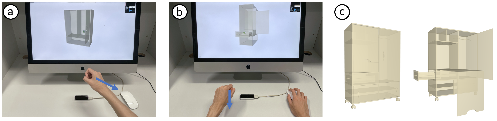
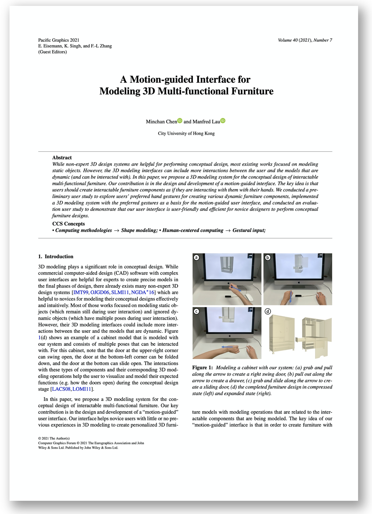

|
A Motion-Guided Interface for Modeling 3D Multi-functional Furniture |
|
Pacific Graphics 2021
|
|
Minchan Chen
Manfred Lau
City University of Hong Kong |
|  |
|  |
Paper [PDF] Slides [PPTX] Citation [BibTeX] Chen, M. and Lau, M. "A Motion‐guided Interface for Modeling 3D Multi‐functional Furniture." In Computer Graphics Forum, vol. 40, no. 7, pp. 229-240, 2021. |